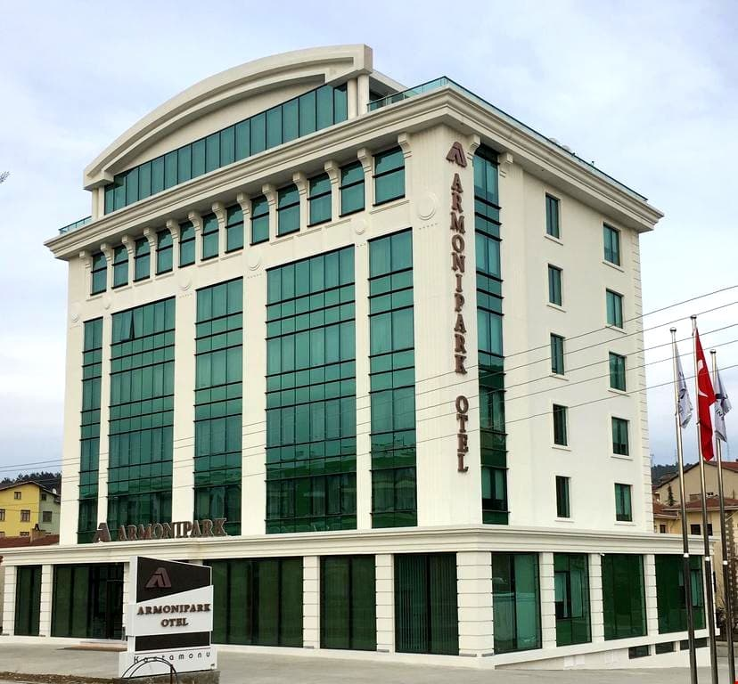
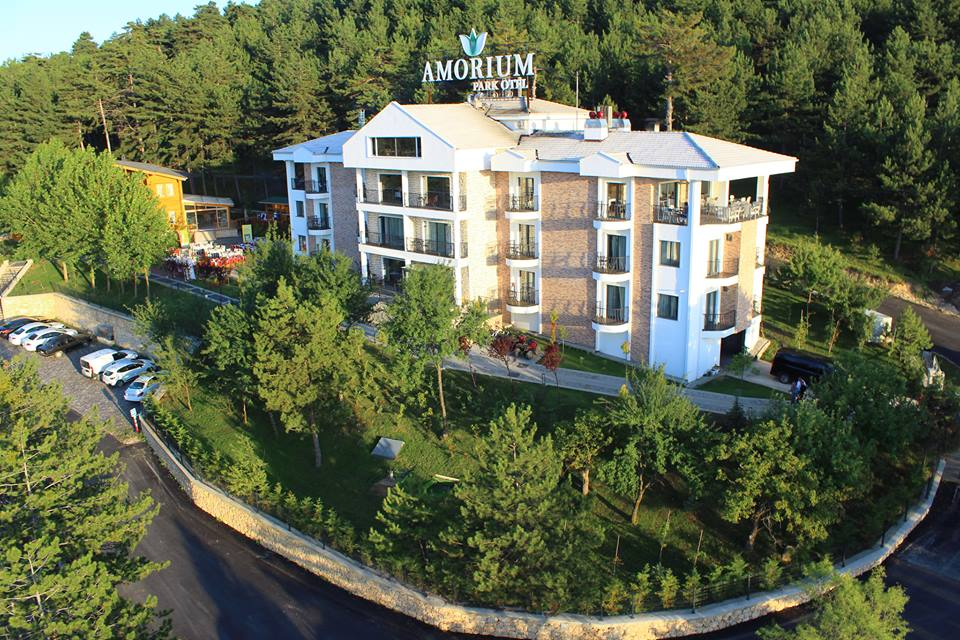
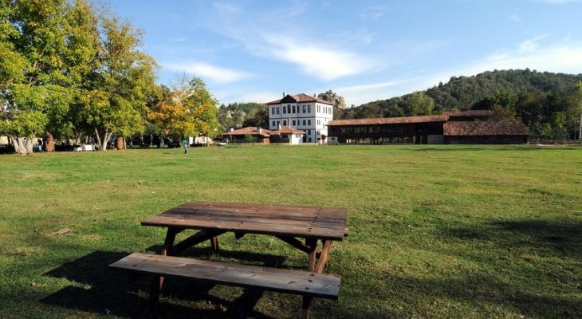
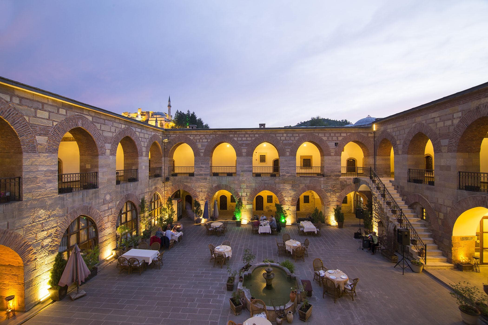
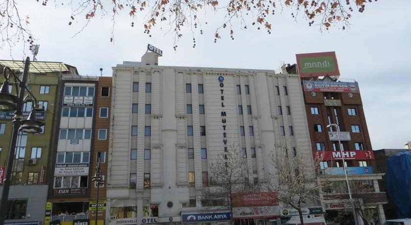

Kastamonu tatilinizi eğlenceli ve konforlu geçirmenize imkân sunan birçok konaklama tesisi bulunmaktadır. Yemyeşil doğası ile dikkat çeken şehir, gelen ziyaretçilerine birçok farklı konaklama seçeneği sunmaktadır. Dört mevsim konfor sağlayan dağ otelleri, doğa ile iç içe zaman geçirmenize olanak sağlayan oteller, havuzlu oteller gibi pek çok seçenek bulunmaktadır. Her kesime ve her bütçeye uygun olan konaklama seçenekleri arasından kendinize en uygun olanı seçebilir ve keyifli bir tatil geçirebilirsiniz. Şehirde sıklıkla tercih edilen popüler konaklama tesisleri arasında; Armoni Park Otel, Amorium Hotel, Otel Şadıbey Çiftliği, Kastamonu Uğurlu Konakları, Kurşunluhan Hotel ve Otel Mütevelli yer almaktadır.
Armoni Park Otel, Kastamonu’nun Merkez ilçesinde yer almaktadır. Şehir merkezine yaklaşık olarak 3,5 km uzaklıktadır. Oldukça yakın bir konumda yer alan konaklama tesisine ulaşım için Cumhuriyet Caddesi’ni kullanabilirsiniz. Armoni Park Otel gelen misafirlerine kaliteli ve konforlu hizmetler sunmaktadır. Tesis içerisinde konaklama süreciniz boyunca yararlanabileceğiniz pek çok olanak bulunmaktadır. Bu olanaklar arasında ücretsiz yüksek hızda wifi kullanımı, ücretsiz açık büfe kahvaltı, 24 saat oda servisi, 24 saat açık resepsiyon, restoran, spa hizmetleri, buhar odası gibi olanaklar yer almaktadır. Tesisin oda özellikleri arasında ise klima, telefon, plazma televizyon, özel banyo, ücretsiz yararlanabileceğiniz kozmetik ürünleri, günlük kat hizmeti, kaliteli yatak takımı, kahve ve çay makinesi gibi özellikler yer almaktadır. Ayrıca tesiste 24 saat boyunca hizmet veren spor salonu bulunmaktadır. Konaklama süreciniz boyunca güne harika bir açık büfe kahvaltı servisi ile başlayabilir, öğle ve akşam yemeğinizi tesis bünyesinde yer alan restoranda yiyebilir, günün yorgunluğunu spor salonunda eğlenceli aktiviteler yaparak atabilirsiniz. Toplam 65 odası ile hizmet veren tesise giriş işlemleri saat 14.00’da başlamakta ve çıkış işlemleri ise en geç saat 23.00’da tamamlanmaktadır. Tesis, evcil hayvan kabul etmemektedir. Ayrıca konaklama süreciniz boyunca 30 dakikalık yürüme mesafesinde yer alan Kastamonu Müzesi’ni ziyaret edebilir ve tarihi birçok eseri yerinde görebilirsiniz.
Amorium Hotel, Kastamonu’nun Merkez ilçesine bağlı Budamış Mahallesi’nde yer almaktadır. Şehir merkezine yaklaşık olarak 8 km uzaklıktadır. Özel aracınız ile D765 üzerinden ulaşım mümkündür. Amorium Hotel, 27 odası ile gelen misafirlerine konforlu hizmetler sunmaktadır. Tesis bünyesinde yararlanabileceğiniz olanaklar arasında ücretsiz sabah kahvaltısı, ücretsiz kablosuz internet, 24 saat açık resepsiyon, 24 saat oda servisi, ücretsiz otopark hizmeti günlük kat hizmetleri, sauna, spa merkezi, buhar odası, toplantı odası gibi olanaklar yer almaktadır. Tesisin oda özellikleri arasında ise anti alerji yatak takımı, özel banyo, ücretsiz kozmetik ürünleri, LCD televizyon, telefon, klima, masa, günlük kat hizmeti, buzdolabı, emanet kasası gibi temel ihtiyaçlarınıza yönelik özellikler yer almaktadır. Konaklamanız boyunca güne keyifli bir sabah kahvaltısı ile başlayabilir, öğle ve akşam yemeklerinizi tesisin bünyesinde yer alan restoranda yiyebilirsiniz. Evcil hayvan dostu olan konaklama tesisine evcil hayvanınız varsa gönül rahatlığı ile getirebilirsiniz. Tesise giriş işlemleri saat 14.00 ile öğlen saatleri arasında yapılmakta ve çıkış işlemleri ise en geç öğlen saatlerinde tamamlanmaktadır. Konaklama süreciniz boyunca tesise sadece 4 km uzaklıkta bulunan Kastamonu Kalesi’ni de ziyaret edebilirsiniz.
Otel Şadıbey Çiftliği, Kastamonu’nun Merkez ilçesine bağlı Talipler Köyü’nde yer almaktadır. Şehir merkezine yaklaşık olarak 19 km uzaklıktadır. Özel aracınız ile Kastamonu Daday üzerinden ulaşım mümkündür. Otel Şadıbey Çiftliği, bünyesinde bulunan toplam 40 otel odası ile gelen misafirlerine konforlu hizmetler sunmaktadır. Toplam 3 kattan oluşan otelde yararlanabileceğiniz pek çok olanak mevcuttur. Bu olanaklar arasında 3 restoran, ücretsiz sabah kahvaltısı, ücretsiz kablosuz internet kullanımı, lobide şömine, bahçe, 24 saat açık resepsiyon, açık tenis kortu, ortak alanda çay ve kahve servisi, günlük kat hizmetleri gibi olanaklar yer almaktadır. Tesisin oda özellikleri arasında ise temel ihtiyaçlarınıza yönelik birçok özellik bulunmaktadır. Özel banyo, televizyon, telefon, günlük kat hizmeti, saç kurutma makinesi, emanet kasası, mini bar gibi özellikler mevcuttur. Tesiste ayrıca sevdikleriniz ile birlikte piknik yapabileceğiniz alanlar da bulunmaktadır. Tesise giriş işlemleri öğlen saatlerinde başlamakta ve çıkış işlemleri de en geç öğlen saatlerinde yapılmaktadır. Tesis, evcil hayvan kabul etmemektedir. Havaalanı gidiş dönüş servis hizmeti bulunan tesiste, bu hizmetten yararlanabilmeniz için belli bir ücret ödemeniz gerekmektedir. Konaklama süreciniz boyunca binicilik, hamam, piknik gibi aktivitelerden yararlanabilirsiniz.
Kastamonu Uğurlu Konakları şehir merkezinde yer almaktadır. Yaklaşık 5 dakikalık bir yürüme mesafesinde yer alan konaklama tesisine ulaşım için; Cumhuriyet Caddesi’ni ve Şeyh Şaban-ı Veli Caddesi’ni kullanabilirsiniz. Kastamonu Uğurlu Konakları, gelen misafirlerini oda kahvaltı konsepti ile ağırlamaktadır. Toplam 25 odası ile hizmet veren tesiste her sabah açık büfe kahvaltı servisi sunulmaktadır. Tesis bünyesinde 2 restoran, ücretsiz kablosuz internet, ücretsiz otopark, 24 saat açık resepsiyon, tur ve bilet hizmetleri, valiz dolabı, bahçe, toplantı odaları gibi hizmetler yer almaktadır. Tesis aynı zamanda tatil amaçlı konaklamanın yanı sıra iş seyahatleri edenler tarafından da sıklıkla tercih edilmektedir. Tesis bünyesinde yer alan tüm odalar her gün düzenli olarak temizlenmektedir. Oda özellikleri arasında LCD televizyon, telefon, özel banyo, saç kurutma makinesi, ayrı oturma alanı, ücretsiz kozmetik ürünleri gibi özellikler yer almaktadır. Tesise giriş işlemleri saat 14.00’da başlamakta ve çıkış işlemleri ise en geç saat 12.00’da tamamlanmaktadır. Tesiste evcil hayvanların da konaklaması mümkündür. Güne keyifli bir sabah kahvaltısı ile başlayabilir, akşam yemeğinizi Türk mutfağından özel lezzetler sunan restoranında yiyebilirsiniz.
Kurşunluhan Hotel, Kastamonu’nun Merkez ilçesine bağlı Hepkebirler Mahallesi’nde yer almaktadır. Şehir merkezine sadece 1 km uzaklıkta bulunan tesise İzbeli Sokağı üzerinden yürüyerek ulaşım sağlayabilirsiniz. Kurşunluhan Hotel, gelen misafirlerine konforlu ve kaliteli bir konaklama imkânı sunmaktadır. Yaklaşık 600 senelik bir kervansarayda hizmet veren tesis, otantik havası ile de birçok tatilcinin dikkatini çekmektedir. Tesiste yararlanabileceğiniz olanaklar arasında ücretsiz wifi erişimi, ücretsiz sabah kahvaltısı, açık ve kapalı restoran, otopark, TV salonu, 24 saat açık resepsiyon gibi olanaklar yer almaktadır. Toplam 26 odası ile hizmet veren tesisin oda özellikleri arasında ise LCD televizyon, telefon, özel banyo, mini bar gibi özellikler yer almaktadır. Tesise giriş işlemleri saat 14.00’da başlamakta ve çıkış işlemleri ise en geç saat 12.00’da yapılmaktadır. Tesis, evcil hayvan ve rehber köpek kabul etmemektedir. Tesis bünyesinde sabah kahvaltısı hariç sunulan tüm hizmetler ücretlidir. Tesiste 0-6 yaş arası bir çocuk ücretsiz bir şekilde misafir edilmektedir. Özel aracınız ile gelmeyi tercih ederseniz, tesis bünyesinde yer alan otopark hizmetinden yararlanabilirsiniz. Konaklama süreciniz boyunca yürüme mesafesinde yer alan Aktarlar Çarşısı’nı da ziyaret edebilirsiniz.
Otel Mütevelli, Kastamonu’nun Merkez ilçesine bağlı Hepkebirler Mahallesi’nde yer almaktadır. Şehir merkezine sadece 1 km uzaklıkta bulunmaktadır. Yürüme mesafesinde yer alan konaklama tesisine İzbeli Sokağı üzerinden ulaşım mümkündür. Otel Mütevelli, 8 kattan oluşmakla birlikte toplam 57 odası ile gelen misafirlerine konforlu hizmetler sunmaktadır. Bu hizmetler arasında her sabah açık büfe kahvaltısı servisi, lobide kahve servisi, belirli saatlerde oda servisi, restoran, cafe, 24 saat açık resepsiyon, ücretsiz wifi erişimi, çatı terası, genel alanlarda televizyon, kütüphane gibi hizmetler yer almaktadır. Tesisin oda özellikleri arasında ise klima, düz ekran televizyon, telefon, özel banyo, ücretsiz kullanabileceğiniz kozmetik ürünleri, günlük kat hizmeti, masa, teras, saç kurutma makinesi, klima, emanet kasası gibi özellikler yer almaktadır. Tesise giriş işlemleri saat 14.00’da başlamakta ve çıkış işlemleri ise en geç saat 11.00’da tamamlanmaktadır. Tesis, evcil hayvan kabul etmemektedir. Çocuklu aileler için çocuk & beşik yatağı yoktur. Güne muhteşem bir açık büfe kahvaltısı ile başlayabilir, öğle ve akşam yemeğinizi tesis bünyesinde bulunan restoranda yiyebilirsiniz. Konaklama süreciniz boyunca tesise sadece 4 dakikalık yürüme mesafesinde yer alan Kent Tarihi Müzesi’ni ziyaret edebilirsiniz. Ayrıca özel aracınız ile gelirseniz, tesis bünyesinde yer alan otopark hizmetinden ücretsiz bir şekilde faydalanabilirsiniz.